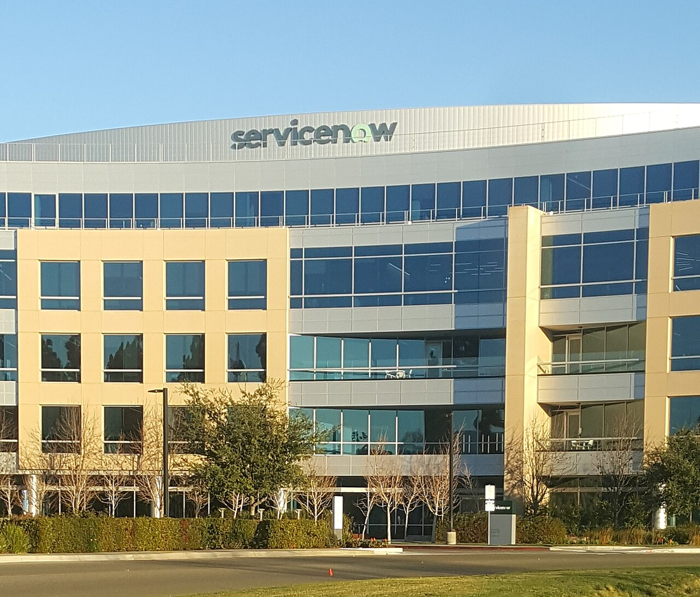

ServiceNow revenue rose 20.5%; net income fell 45% in its first full quarter with Armis


ServiceNow sells the cloud software many large companies use to run their IT, customer service and office workflows. In the first half of 2026 it went shopping for security companies, and borrowed to pay for them. The third quarter is the first full one with the largest of them, Armis, inside its accounts, and it shows both sides of the deal: revenue grew 20.5% to $4.1 billion from the third quarter of 2025, at its usual pace, while net income fell 44.8% to $277 million.
Sales kept their pace
Revenue of $4.1 billion was 20.5% above a year earlier. Over the last eight quarters, growth on the same quarter a year before has stayed between 18.6% and 24.0%, acquisitions or not. For the first nine months of 2026, revenue was $11.9 billion, up 22.2%. Subscription revenues rose by $689 million, which the 10-Q says was "primarily driven by increased purchases by new and existing customers."
The contracts that will turn into revenue grew too. Current remaining performance obligations, the contract revenue ServiceNow expects to recognize over the next year, were $13.65 billion, up 20.5%, the earnings release says. The company's newest products are the ones it talks about most: chief financial officer Gina Mastantuono said ServiceNow had raised its target for new annual contract value from AI products for the second time this year, "from $1 billion at the start of the year to $1.7 billion now."
What the deals cost
The 10-Q puts prices on the shopping. On March 2, ServiceNow bought Veza, an AI identity security company, for about $1.2 billion. On April 20 it bought Armis, which sells cyber-exposure management and cyber-physical security tools, for about $7.6 billion, "settled in cash."
Buying a company brings intangible assets, such as its technology and customer relationships, that are written down over several years. In the quarter, amortization of those assets rose by $119 million "as a result of acquisitions." Payments to third-party cloud providers, which run part of ServiceNow's service, rose by $79 million. Gross margin, the share of revenue left after the cost of delivering the service, fell to 70.5% from 77.3%. For subscriptions alone it was 74%, against 80% a year earlier, and professional services, the help ServiceNow gives customers to set its software up, ran at a gross loss of 33% of their revenue, against breakeven.
Costs below that line rose as well. Research and development spending was $956 million, up 27.5%, and stock-based pay was $630 million, up 28.0%; the 10-Q links part of that to "stock-based awards granted in connection with acquisitions." Operating margin was 9.4%, against 16.8% a year earlier. In the second quarter, when the Armis deal closed, it had been 4.1%.
Paid for with debt, not data centers
To fund Armis, ServiceNow borrowed $4.0 billion under a term loan in April and repaid it in May by selling bonds, the 10-Q says. It also had $2.1 billion of commercial paper, short-term borrowing, outstanding at September 30. Total debt was $7.5 billion, against $1.5 billion a year earlier, and cash and short-term investments were $4.6 billion, against $5.4 billion.
The new debt shows up below operating income. Interest expense rose by $75 million, "primarily due to the issuance of senior notes and commercial paper," and interest income fell by $46 million, because the company held less cash and earned lower rates on it. Pretax income was $370 million, against $694 million, and diluted earnings per share were $0.27, against $0.48. ServiceNow bought back $2.2 billion of its own shares in the first quarter and none in the second or third.
What it did not spend on is data centers. Capital spending was $91 million, down 61.3% from a year earlier, while its bill for other companies' cloud capacity rose. Mastantuono described the choice in the release: "we are capturing this significant opportunity with a capital-efficient model, reducing capex and raising our full-year free cash flow margin target by 100 basis points to 36 percent." Chief executive Bill McDermott put it as a question: "What other company at the forefront of the agentic enterprise has no capital or compute constraints?"
Free cash flow was $748 million, up 29.4%. Over nine months, cash from operations was $3,096 million, against $3,206 million a year earlier, which the 10-Q puts down to "higher business combination and related costs to support business growth." The question the next quarters will answer is whether sales keep growing fast enough to carry what ServiceNow bought.
Twelve quarters of figures
Free cash flow is cash from operations minus purchases of property and equipment, and differs from the company's own non-GAAP free cash flow measure. Total debt is the balance sheet's long-term debt plus its short-term debt, which is commercial paper.
Sources: Form 10-Q (SEC EDGAR) · Form 10-Q filing index · EDGAR company facts for ServiceNow · ServiceNow third-quarter 2026 earnings release (Exhibit 99.1). More figures for ServiceNow are on its company page.